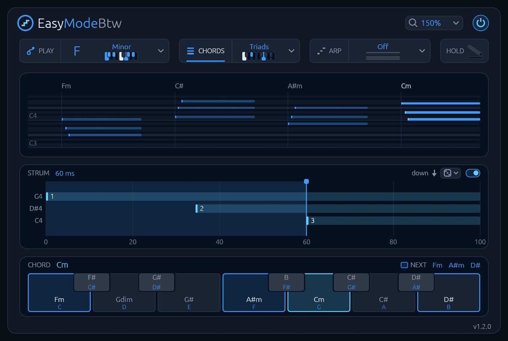
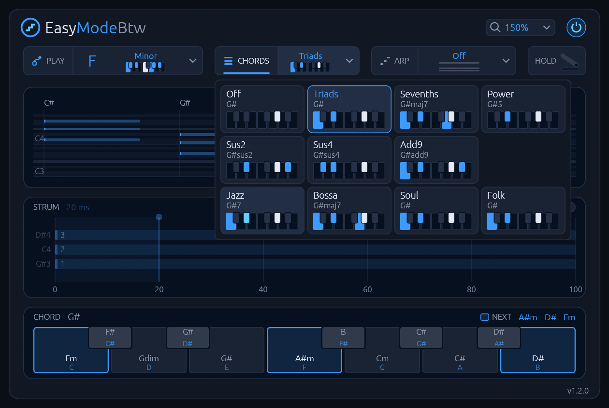
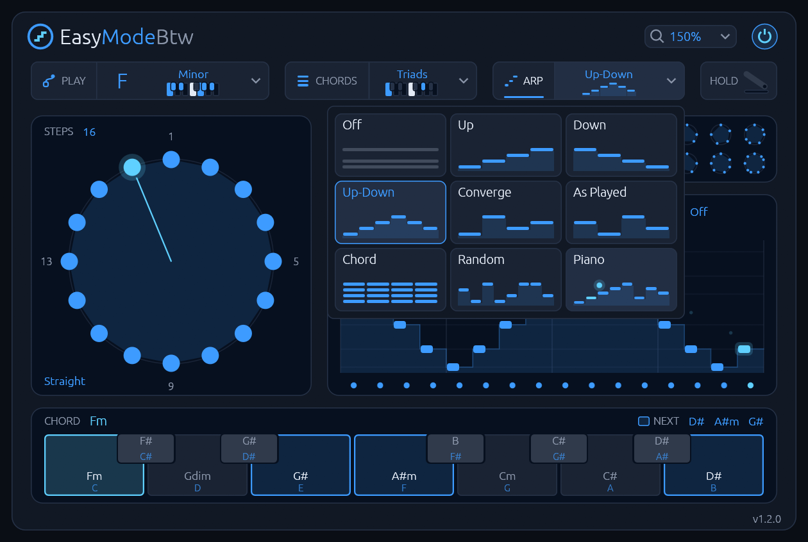
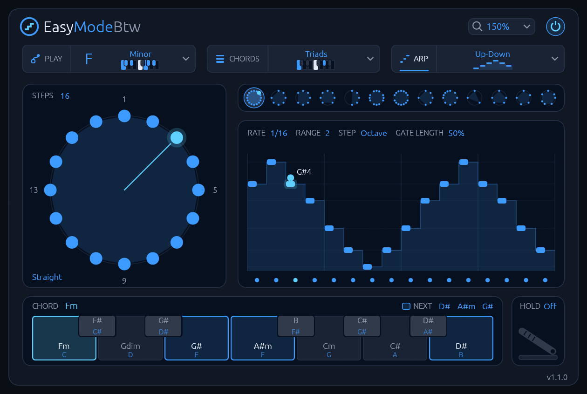

EasyModeBtw manual
Play any scale on the white keys, as chords, strums or arpeggios. A MIDI effect for Linux: the white keys play the notes of the scale you pick with its root on middle C, and each key can play a chord of the scale instead, strummed like a guitar or broken into an arpeggio on the beat.
Version 1.2.6. To install it, see the install steps.
Getting started
EasyModeBtw goes in front of an instrument, because it changes the notes the instrument receives.
- Bitwig Studio: put it in the Note FX slot of an instrument track, or anywhere before the instrument in the device chain.
- Other hosts: use it as a MIDI effect (a CLAP note effect) in front of an instrument.
Choose a KEY and a SCALE, then play the white keys from middle C upwards: every note is in the scale. Then set CHORDS to Triads and play the white keys again: each one plays a chord. Open the PLAY page to see which notes every key sends.

The controls
The header holds the zoom select and the power switch. Below it one row holds three selectors, the key and scale, CHORDS and ARP, and the HOLD pedal. A click on a selector's icon or caption shows its page (PLAY, CHORDS or ARP), and a click on its value opens its list of tiles. The scales and chord sets have a little keyboard with their notes lit, the chord sets showing what they play on the key you last held; the arp orders have their stairs. Hover a tile and it performs. Under the row is the page. Rest the pointer on any control and a tooltip says what it does.
| Control | Range | Default | What it does |
|---|---|---|---|
| Power switch (top right) | On / Off | On | Off, every event passes through unchanged. |
| KEY | C to B | C | The scale's root: the note middle C plays. |
| SCALE | 20 scales | Chromatic | The scale the white keys walk through. |
| CHORDS | Off, Triads, Sevenths, Sus2, Sus4, Add9, Jazz, Bossa, Soul, Folk, Power, Thirds, Sixths, Octaves | Off | Off plays one note per key; the others a chord, or a note with a partner, on every key. |
| ARP | Off, Up, Down, Up-Down, Converge, As Played, Chord, Random, Piano | Off | Off sends each key's note or chord at once; the others play it one note after another on the beat. |
| Strum switch (CHORDS page) | On / Off | Off | Off, a chord's notes start together. |
| STRUM (CHORDS page) | 0 to 100 ms | 20 ms | How long a three-note chord takes to strum, first note to last. Drag on the strum display to set it. |
| Strum direction (CHORDS page) | Up and down, Up, Down, Random | Up and down | Which way the strums go. Random, the dice, tosses it for each strum. |
| RATE (ARP page) | 1/4, 1/8., 1/8, 1/8T, 1/16, 1/16T, 1/32 | 1/16 | How far apart the arp's steps are. |
| RANGE (ARP page) | 1 to 4 | 1 | How many times the run plays, each time higher. |
| STEP (ARP page) | Octave, 2nd, 3rd, 4th, 5th, 6th | Octave | How far each repeat climbs: an octave, or that far up the scale, so it never leaves the key. |
| GATE LENGTH (ARP page) | 5 to 100 % | 50 % | How long each note lasts, as a share of its step. 100 % lasts until the next note. |
| SWING (ARP page) | Off, 54 %, 58 %, 62 %, 66 %, 71 % | Off | Pushes every second step later. 66 % is about a triplet feel. |
| HOLD (the sustain pedal, right of ARP) | On / Off | Off | Let go and what the keys play goes on, until your next press with every key up replaces it. In every mode. |
| Rhythm shelf (ARP page) | Straight and 25 rhythms | Loads a rhythm into the step ring. | |
| Step ring (ARP page) | 1 to 32 steps | 16, all playing | Which steps play and how loud. Saved with the project. |
| Zoom (header) | 100 to 200 % | 100 % | Sizes the window. |
The version is in the bottom-right corner, and clicking the logo opens the plugin's page.
How to use it
What the white keys play
Every white key is one step of the scale. Middle C (C3, MIDI note 60) plays the root, the next white key up plays the next note of the scale, and white keys below middle C walk down it. With CHORDS off, black keys play nothing.
| Scale | White keys C3 D3 E3 F3 G3 A3 B3 C4 play |
|---|---|
| C Major | C3 D3 E3 F3 G3 A3 B3 C4 (unchanged) |
| F Natural Minor | F3 G3 Ab3 Bb3 C4 Db4 Eb4 F4 |
| G Major | G2 A2 B2 C3 D3 E3 F#3 G3 |
Roots C to F sit on or above middle C, and F# to B just below it, so the playable range stays centred. A five-note pentatonic repeats every five white keys, so your hands cover more than an octave for the same reach, which makes fast runs easy.
Chromatic, where a new instance starts, plays every key, black ones too, each its own note moved so middle C plays the root: in C, the keyboard as it is.
Click the value on the PLAY selector for its list: the twelve keys along the top, and a tile for each scale, naming its notes in your key and lighting them on a little keyboard.

Chords
With CHORDS on, each key plays a chord built on its note.
- Triads, Sevenths, Sus2, Sus4, Add9: the scale's own chords. In C major the white keys play C Dm Em F G Am B°.
- Jazz, Bossa, Soul, Folk: the chord that genre most often puts on each note, counted from thousands of lead sheets. In C major, Jazz plays Dm7 on D, G7 on G, Cmaj7 on C and A7 on A.
- Power: the root and a perfect fifth on every key, as rock plays it.
- Thirds, Sixths, Octaves: the key's own note with one partner above it, for a melody that comes out harmonised: the third or the sixth from the scale, or the octave. A black key takes a major third or a major sixth. The key map names each key's two notes; no chord is named or suggested. With the strum on, the partner follows like a grace note, and the arp runs over the two.
In Double Harmonic and Hungarian Minor a few chords have no name: their keys show the notes they play.
The black keys play a major chord on their own note (bII, bIII, #IV, bVI, bVII), the chords songs borrow from outside the key. Each chord plays in root position on the note its key plays alone, the same notes the arp plays from.
The CHORDS page shows the last four seconds of notes with each chord's name, the strum, and a key map: one octave of keys, each naming the chord it plays. The chord sounding glows on its key, and three chords that would sound good next are lit on theirs and named after NEXT. Where a white and a black key play the same chord, the white one lights. Click a key on the map to hear its chord, in the octave of the last note you played: near its top it plays soft, near its foot loud.

The list on the CHORDS selector has a tile for each chord set, showing what it plays on the key you last held, so you can compare them before you choose.

Strum
Turn on the switch on the strum display and a chord's notes start one after another, as a guitarist strums. STRUM is a three-note chord's strum; more notes take longer, fewer less. Low to high the notes come evenly; high to low they speed up, as an up stroke does. Start around 20 to 40 ms for a soft strum and 60 to 100 ms for a slow, harp-like one.
The direction select picks up and down in turn, only up, only down, or the dice: each strum goes up or down at random, over the length you set. The strum only delays notes, so it adds no latency.
Arpeggiator
With ARP on, each key's note, or with CHORDS its chord, plays one note after another on the host's beat. While the transport stands it runs at the host's tempo from the first key.
- Up, Down, Up-Down, Converge, As Played, Random: the chord's notes in that order.
- Chord: the whole chord on every step; with the strum on, each step is strummed the way the direction select says, up and down in turn like a strumming hand to begin with. On the dice, each step tosses its own.
- Piano: the way pop pianists break a chord: root, fifth, octave, then the third and fifth above, weaving back down, the top note loudest.
The list on the ARP selector draws each order as stairs. Hover one and it performs.

RANGE plays the run up to four times, each time higher by STEP. A chord played a little late still starts on its root.
The ARP page shows the stairs: what the arp plays over one turn of its rhythm, a ball hopping from note to note with the note's name and the ring's rests as gaps. RATE, RANGE, STEP, GATE LENGTH and SWING are in their header: click one for its menu, or drag it up and down, or scroll. Drag the end of any note to set GATE LENGTH, and click a dot under the stairs to add that step to the rhythm or take it out.
Beside the stairs is the step ring. Click a step to turn it on or off, drag it towards the centre
to make it softer and away to make it louder, and double-click it for full. Drag around the ring
elsewhere to turn the rhythm, and drag the number of steps up or down to change it. Right-click a
step that plays to roll it: it plays its note two, three or four times in its own length, one more
with each click, and after four once again. Its dot is cut into as many slices, the stairs show as
many short notes, and hovering it says 3x. GATE LENGTH is each strike's share of its part of the
step; with ARP on Chord the whole chord is struck again. A roll is saved with the rhythm. The shelf of
tiny rings loads a pattern into it: hover one to see it over the big ring with its name, and click
to load it. Its first row has Straight, eight of the commonest broken-chord bars in pop piano, and
the tresillo, cinquillo, bossa and bell rhythms. Its second row has thirteen more, most of them
traditional rhythms from around the world, from Cumbia (4 steps) to Central Africa (16); each one's
tooltip says where it comes from.
Below are the keys from the CHORDS page, playable with the mouse, with the chords to play next lit on them; with CHORDS Off each key names the note it plays. With ARP Off these keys are off, as the CHORDS page's are with CHORDS Off.

HOLD
HOLD is the sustain pedal at the end of the selector row, on every page. Click to stomp it, and it stays down. Let go of the keys and what they play goes on, until your next press with every key up replaces it. With ARP on the arp plays on; with ARP Off the notes and chords you let go keep sounding.
The PLAY page
The PLAY page shows what EasyModeBtw does to your playing. The keys you press are on the lower keyboard, the notes sent on the upper one, with a thread from each key to every note it started, and the notes sent rise above. Click or drag on the lower keyboard to play with the mouse.
Notes played with the mouse go out of the plugin like any it sends; a DAW records them only where it records the plugin's output.
Good to know
- Latency: none. The strum and the arp only delay notes.
- Automation: KEY, SCALE, CHORDS and ARP changes take effect at the exact sample they are drawn at.
- Saved projects: a project saved with 1.1 keeps its settings, but one with the strum on Guitar now plays Close, and one with HOLD on and ARP Off now holds its notes. A project saved with 1.0 has the same changes, and its chords now play in root position on each key's own note, so one using CHORDS sounds different. A GATE LENGTH saved above 100 % keeps its value until you touch the control. A project saved with 0.1.x plays as before, except one saved with SCALE on Chromatic, which now plays every key.
- Changing settings while you play: a held note keeps sounding until you let go of its key, and then the right notes end, so nothing gets stuck. Switching ARP or the power switch ends what sounds; press the keys again.
- Other MIDI: pitch bend, mod wheel and other CCs, channel pressure and program changes pass through untouched.
- Zoom: the project remembers it, and a new window opens at the zoom you last chose in any JellyComet plugin.
- Hosts: the CLAP passes
clap-validator. - Display: X11, or XWayland on a Wayland desktop, with a Vulkan driver.
Troubleshooting
- The plugin doesn't show up: check that
easymodebtw.clapis in~/.clapor/usr/lib/clap, then rescan plugins in your DAW. - The editor window stays black or doesn't open: check that a Vulkan driver is installed.
The
vulkaninfotool fromvulkan-toolsshould list your GPU. Bitwig Studio writes plugin errors to~/.BitwigStudio/log/engine.log.